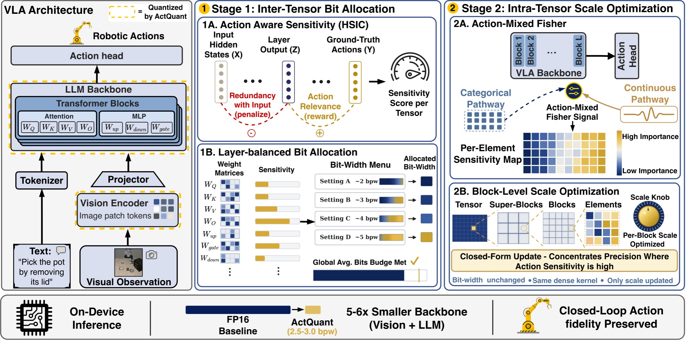
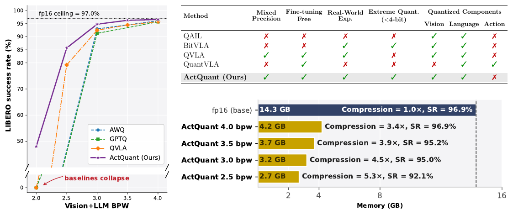
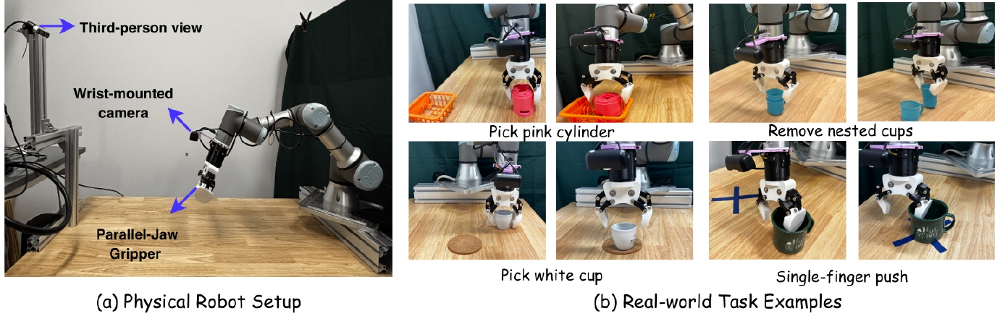

Vision-Language-Action (VLA) models exhibit remarkable action generation for embodied intelligence, but their heavy compute makes deployment on edge platforms impractical. Aggressive, sub-4-bit weight quantization is the natural solution, yet existing post-training quantization (PTQ) methods suffer severe performance degradation in this regime. To address this, we introduce ActQuant, an action-guided mixed-precision PTQ framework that operates in two stages: (1) an inter-tensor bit allocator that assigns each weight matrix a single bit-width based on how much it contributes to predicting the agent's actions; (2) an intra-tensor scale optimizer tunes per-block quantization scales using action-aware curvature, so that dynamic range is concentrated on the weights most influential for control. To deliver the on-device benefits of our aggressive quantization, we further introduce OmniModel.cpp, an agentic conversion pipeline that ports architectures into a native C/C++ runtime with efficient low-bit kernels.
We evaluate ActQuant both in simulation and on a real-world 6-DoF UR3 arm, with all models deployed through OmniModel.cpp. On the LIBERO benchmark, ActQuant is the only method that operates at or below 3 bits-per-weight, retaining 95.0% on OpenVLA-OFT and 94.8% on π0.5. Pushed further, ActQuant reaches 2.5 bpw at 90.1% on OpenVLA-OFT, compressing the backbone from 14.3 GB to 2.7 GB (5.3×). On the physical UR3 arm, π0.5 quantized with ActQuant retains the baseline's success rate while reducing the memory footprint by 2.5×.

Overview of ActQuant. Stage 1 allocates a per-tensor bit-width using an action-loss sensitivity signal. Stage 2 optimizes per-block scales with action-aware curvature so quantization error is concentrated away from weights that drive control.

Existing PTQ methods (RTN, AWQ, GPTQ, QVLA) collapse to 0% success below ~3 bpw. ActQuant is the first PTQ method that crosses the sub-4-bit cliff while preserving task success, unlocking real memory savings for on-device deployment.
Comparison of quantization methods on two VLA models. RTN, AWQ, and GPTQ use uniform integer precision; QVLA and ActQuant support mixed precision (reported as average bits-per-weight). Bold = best at that bpw; underline = second best. ActQuant rows are highlighted.
| Method | Vision+LLM BPW |
Success Rate (%) | Δ | VLA BPW |
Mem. (GB) |
||||
|---|---|---|---|---|---|---|---|---|---|
| Spatial | Object | Goal | Long | Avg. | |||||
| OpenVLA-OFT | |||||||||
| Baseline | 16.0 | 97.6 | 98.4 | 96.8 | 95.1 | 96.9 | 0.00 | 16.0 | 14.3 |
| AWQ | 4.0 | 94.6 | 98.6 | 96.8 | 94.4 | 96.1 | −0.8 | 4.3 | 4.1 |
| AWQ | 3.0 | 86.4 | 98.0 | 90.2 | 91.4 | 91.5 | −5.4 | 3.4 | 3.2 |
| AWQ | 2.0 | 0.0 | 0.0 | 0.0 | 0.0 | 0.0 | −96.9 | 2.7 | 2.4 |
| GPTQ | 4.0 | 90.8 | 98.8 | 96.4 | 92.6 | 94.6 | −2.3 | 4.3 | 4.1 |
| GPTQ | 3.0 | 82.4 | 98.0 | 88.8 | 87.2 | 89.0 | −7.9 | 3.4 | 3.2 |
| GPTQ | 2.0 | 0.0 | 0.0 | 0.0 | 0.0 | 0.0 | −96.9 | 2.7 | 2.4 |
| QVLA | 4.0 | 96.0 | 98.7 | 97.4 | 95.2 | 96.8 | −0.1 | 4.8 | 4.5 |
| QVLA | 3.5 | 82.9 | 97.2 | 91.4 | 93.6 | 91.3 | −5.6 | 4.3 | 4.1 |
| QVLA | 3.0 | 40.8 | 56.8 | 20.2 | 31.8 | 37.4 | −59.5 | 3.9 | 3.7 |
| QVLA | 2.5 | 0.0 | 0.2 | 0.0 | 0.0 | 0.0 | −96.9 | 3.4 | 3.1 |
| ActQuant | 4.0 | 96.0 | 98.2 | 97.2 | 95.0 | 96.6 | −0.3 | 4.4 | 4.2 |
| ActQuant | 3.5 | 95.8 | 98.4 | 96.0 | 95.6 | 96.5 | −0.4 | 3.8 | 3.4 |
| ActQuant | 3.0 | 92.8 | 97.4 | 94.0 | 95.6 | 95.0 | −1.9 | 3.5 | 3.2 |
| ActQuant | 2.5 | 86.4 | 98.2 | 84.8 | 91.0 | 90.1 | −6.8 | 3.0 | 2.7 |
| π0.5 | |||||||||
| Baseline | 16.0 | 98.4 | 98.4 | 97.6 | 93.6 | 97.0 | 0.00 | 16.0 | 6.7 |
| AWQ | 4.0 | 96.6 | 98.0 | 96.8 | 93.0 | 96.1 | −0.9 | 5.6 | 2.4 |
| AWQ | 3.0 | 93.4 | 97.0 | 91.4 | 90.2 | 93.0 | −4.0 | 5.0 | 2.1 |
| AWQ | 2.0 | 0.0 | 0.0 | 0.0 | 0.0 | 0.0 | −97.0 | 4.1 | 1.7 |
| GPTQ | 4.0 | 97.2 | 96.8 | 97.0 | 91.8 | 95.7 | −1.3 | 5.6 | 2.4 |
| GPTQ | 3.0 | 92.2 | 95.4 | 88.6 | 89.0 | 91.3 | −5.7 | 5.0 | 2.1 |
| GPTQ | 2.0 | 0.0 | 0.0 | 0.0 | 0.0 | 0.0 | −97.0 | 4.1 | 1.7 |
| QVLA | 4.0 | 98.0 | 97.2 | 96.4 | 91.8 | 95.8 | −1.2 | 6.3 | 2.7 |
| QVLA | 3.5 | 97.8 | 96.2 | 91.4 | 92.6 | 94.5 | −2.5 | 6.0 | 2.5 |
| QVLA | 3.0 | 97.4 | 97.8 | 87.8 | 86.8 | 92.5 | −4.5 | 5.6 | 2.4 |
| QVLA | 2.5 | 93.0 | 97.6 | 71.0 | 55.0 | 79.2 | −17.8 | 5.3 | 2.2 |
| QVLA | 2.0 | 0.0 | 0.0 | 0.0 | 0.0 | 0.0 | −97.0 | 4.7 | 2.0 |
| ActQuant | 4.0 | 98.4 | 99.4 | 96.8 | 91.8 | 96.6 | −0.4 | 6.2 | 2.7 |
| ActQuant | 3.5 | 99.0 | 99.6 | 94.0 | 92.4 | 96.3 | −0.7 | 5.8 | 2.5 |
| ActQuant | 3.0 | 98.2 | 98.8 | 95.0 | 87.2 | 94.8 | −2.2 | 5.6 | 2.4 |
| ActQuant | 2.5 | 96.6 | 98.4 | 74.0 | 73.6 | 85.7 | −11.3 | 5.2 | 2.2 |
| ActQuant | 2.0 | 61.2 | 80.0 | 25.0 | 25.0 | 48.0 | −49.0 | 4.8 | 2.0 |

On a physical 6-DoF UR3 arm, π0.5 quantized with ActQuant matches the full-precision baseline's success rate while reducing memory by 2.5×. All models are deployed through the OmniModel.cpp runtime with low-bit kernels.
@article{akbari2026actquant,
title = {ActQuant: Sub-4-bit Action-Guided Quantization for Vision-Language-Action Models},
author = {Akbari, Arash and Akbari, Arman and Eskandar, Masih and Tan, Qitao and Chen, Yixiao and Luo, Jingwu and Pangaribuan, Bertha and Zhang, Liyun and Dy, Jennifer and Yuan, Geng and Lin, Xue and Liu, Gaowen and Ioannidis, Stratis and Wang, Yanzhi},
year = {2026}
}